Seguridad para parabrisas
Atacado con un bulón de acero impulsado por gomera
La demostración permite observar cómo el laminado ayuda a contener el cristal después de un impacto concentrado sobre el parabrisas.

Volver a nivelesSoluciones específicas para reforzar el parabrisas y reducir la transmisión de calor en parabrisas y techos solares.
Dos aplicaciones diferentes, elegidas según la necesidad de seguridad o control térmico de cada vehículo.
La demostración permite observar cómo el laminado ayuda a contener el cristal después de un impacto concentrado sobre el parabrisas.
Una solución transparente diseñada para disminuir el ingreso de calor y la radiación UV sin comprometer la visibilidad ni la estética del vehículo.